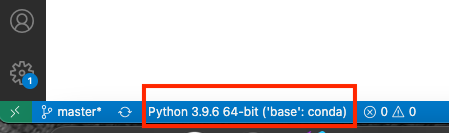
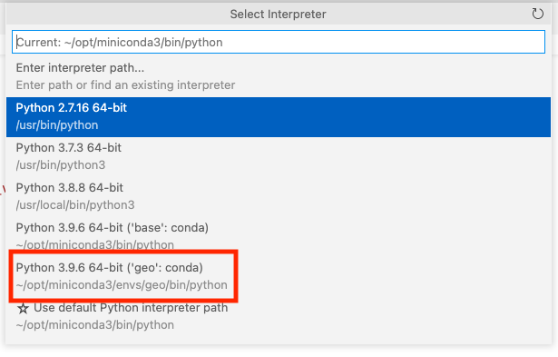
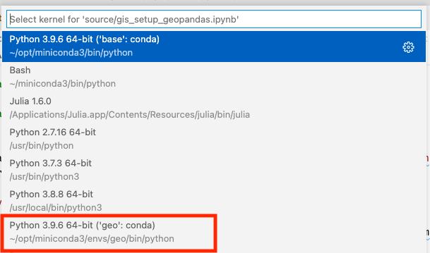

Installing Geopandas
Contents
Installing Geopandas#
Early in the semester, I told you that conda was generally preferred over pip by data scientists because it could install more than just python packages? Well here’s an example of a place that pays off big!
In this class, we’ll be focused on geopandas (for vector data) and rasterio (for raster data), but the reality is that both of these libraries are just wrappers around a set of underlying geospatial libraries that are used everywhere in the GIS world. Whether you’re talking about geopandas, rasterio, or in Python; sp, sf, raster, or rgeos in R, or stand-alone tools like QGIS, the reality is that all the actual GIS work is being done by a small number of libraries (written in C++) by the OSGeo organization: GDAL (for reading and transforming data, once upon a time called OGR), GEOS for geometric operations (e.g. creating unions or intersections of polygons), and PROJ for managing coordinate reference systems.
And that means that to run geopandas, we have to load LOTS of little C++ dependencies, and that’s where conda really helps - do not try to use pip to install geopandas!
Even with the help of conda, however, all these dependencies can be a little bit finicky, so while you are welcome to try to install geopandas directly into your main conda environment, I actually recommend that you install geopandas in a new environment.
conda Environments#
It’s extremely common in software engineering and data science to need different sets of packages (and potentially different versions of Python) for different projects. To make this easier, conda is capable of creating isolated “environments”, each with their own version of Python and related packages.
Create a New Environment#
To create a new environment, simply run the following code:
conda create -n geo
This will create a new environment and install Python and a couple other standard tools. If you want to specify the version of Python being installed, you can also write something like:
conda create -n geo python=3.9
To use an environment, you first have to “activate” it. When you create the environment, conda will also give you directions about how to activate it. On a mac, this looks like:
#
# To activate this environment, use
#
# $ conda activate geo
#
# To deactivate an active environment, use
#
# $ conda deactivate
How to activate an environment, do you as conda instructs! If you’re using Oh-My-Zsh!, then you will also see your current environment reported from the command line:

(And now you know what that (base) that’s always been at the beginning of your commandline meant! It was telling you that you are in your base conda environment).
Once you run that activate command, anything you run from this terminal (including a session of jupyter if you launch it from this command line right now) will be running the Python installation in that environment.
Install Packages#
But because this environment is isolated, none of the packages you had installed in your base environment are accessible anymore, so the first thing you need to do is install whatever packages you need. For what working to be doing with geopandas, I recommend the following:
conda install -c conda-forge geopandas altair matplotlib jupyter
pip install gpdvega # We need one package that's pip-only
(If you setup miniconda with conda-forge as the default channel, you don’t need to explicitly specify the conda-forge channel with -c conda-forge).
Also, you can actually do most of this during your first environment setup if you want, though that final pip install you’ll still have to do after activating the environment.
conda create -n geo -c conda-forge geopandas altair matplotlib jupyter python=3.9
Using Your Environment#
For a tool like Jupyter Notebooks or Jupyter Lab, just activate your conda environment then launch jupyter from that same session, and it will run against your environment.
For a tool like VS Code, you have to specify the Python installation you want to use explicitly. For regular Python sessions, just click the Python interpreter icon in the bottom bar:

Then select the version of Python associated with the environment you just created:

And for Jupyter sessions in VS Code, click on the “Select Kernel” button and you should see an installation (if you installed Jupyter) associated with the environment you want:

Note that if you DONT see your geo environment, quit VS Code and re-open it and try again!